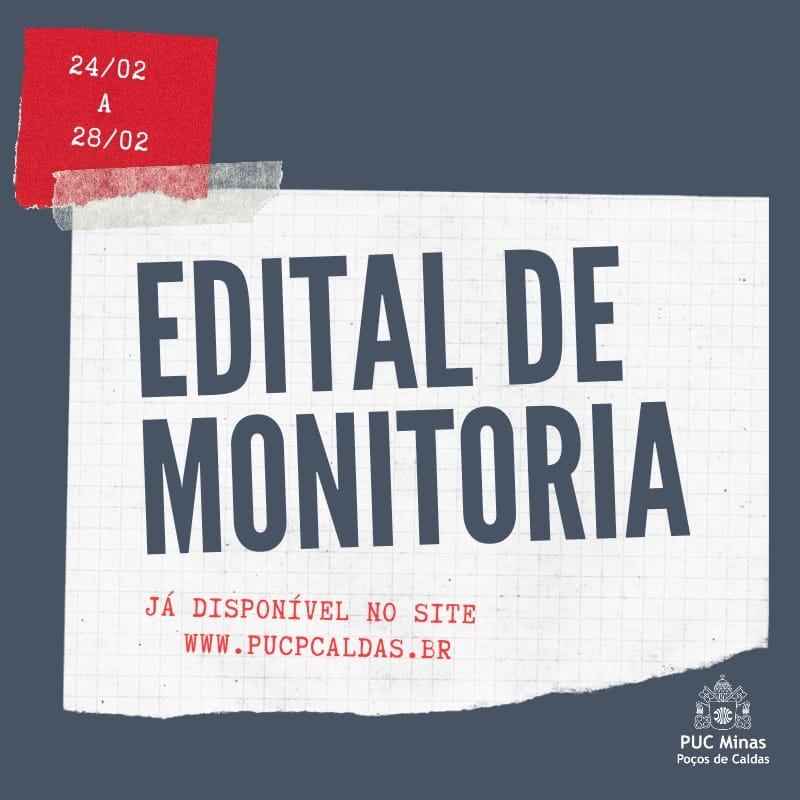

Objetivo das Monitorias na PUC
O principal objetivo dos monitores é promover o reforço e o aprofundamento dos conteúdos acadêmicos, tanto para os monitores quanto para os alunos que se beneficiam dessa ajuda. A
Atividades realizadas pelos monitores
→ Realização de revisões ou reforços de conteúdo para os alunos.
→ Acompanhamento e esclarecimento de dúvidas durante exercícios e atividades práticas.
→ Colaboração em atividades acadêmicas, como projetos e eventos da disciplina.
→ Organização de materiais didáticos, promovendo um aprendizado mais eficiente.
Como participar dos monitores da PUC-Campinas?
1.Verifique os editais :
→ A universidade divulga editais semestrais ou anuais, com informações sobre as disciplinas disponíveis, requisitos para se candidatar e o número de vagas.
2.Cumprir os pré-requisitos :
→ Geralmente, é necessário que o aluno tenha um bom desempenho na disciplina em questão e esteja matriculado em um curso de graduação.
3.Inscrição e seleção :
→ Os detalhes devem ser inscritos no processo seletivo, que pode incluir a análise de histórico escolar, entrevistas ou pesquisas realizadas pelo professor responsável.
4.Acompanhamento do professor
→ Após ser aprovado, o monitor trabalha diretamente com o professor responsável, recebendo orientações e participando das atividades de suporte aos alunos..